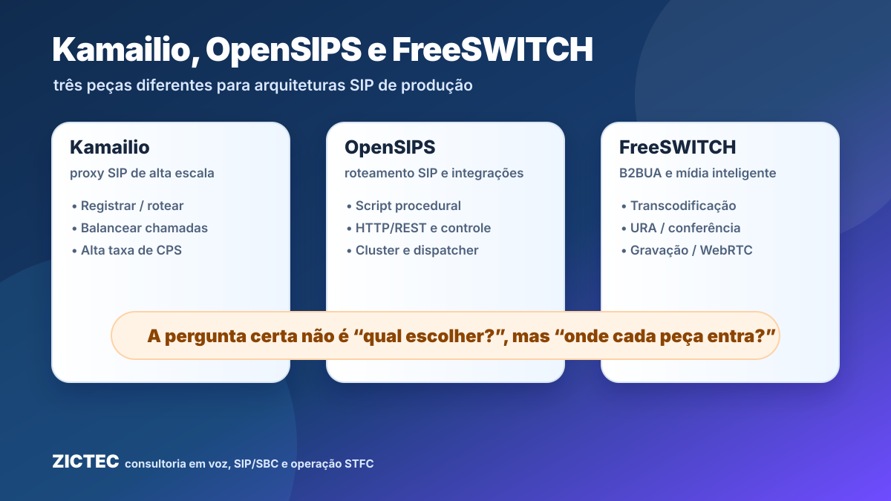
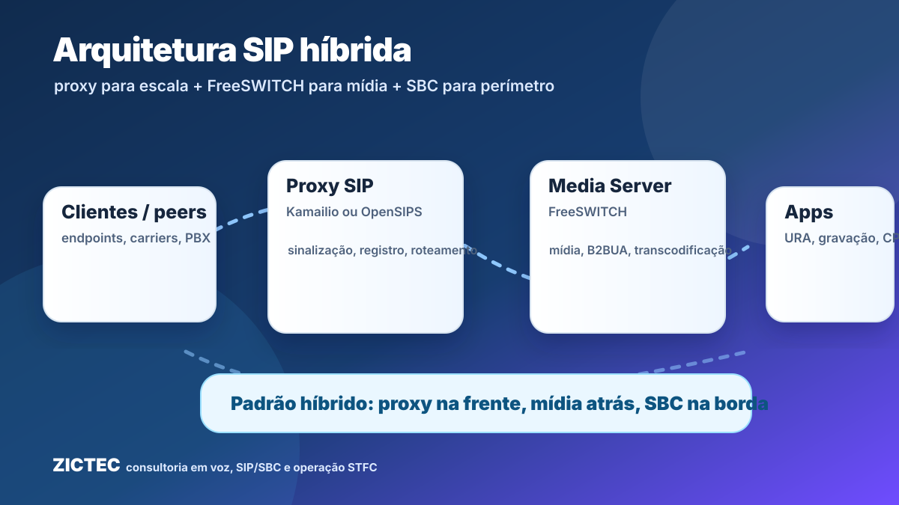
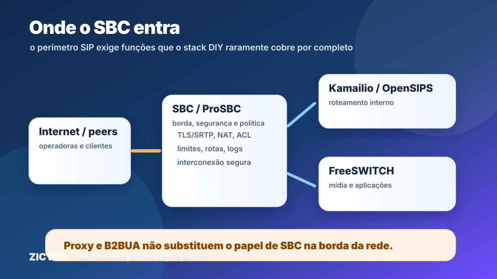

1. A pergunta correta: arquitetura, não disputa de ferramenta
Kamailio, OpenSIPS e FreeSWITCH aparecem muitas vezes como se fossem três produtos concorrentes. Na prática, essa comparação é incompleta. Kamailio e OpenSIPS são proxies/roteadores SIP, pensados para lidar com sinalização, registro, roteamento, balanceamento e alto volume de tentativas de chamada. FreeSWITCH é um B2BUA com pilha de mídia, capaz de encerrar uma chamada de um lado, originar outra do outro e controlar áudio, codecs, gravação, URA, conferência e WebRTC.
Por isso, a decisão técnica não costuma ser “qual dos três instalar?”. A decisão mais madura é: qual função cada componente vai assumir, onde ele ficará na topologia e quais responsabilidades não devem ser empurradas para a ferramenta errada?
Este artigo é uma adaptação técnica em português, com ângulo ZICTEC, inspirada no artigo da TelcoBridges “Kamailio vs OpenSIPS vs FreeSWITCH: Choosing a SIP Platform”. O texto abaixo não é uma tradução literal: reorganiza os conceitos para operadoras, ISPs, integradores e equipes de voz no Brasil.
2. Glossário rápido
- Proxy SIP: elemento focado em sinalização. Encaminha requisições, aplica regras, ajusta cabeçalhos e decide rotas, mas não precisa encerrar a chamada nem carregar o áudio.
- B2BUA: Back-to-Back User Agent. Termina a sessão SIP de um lado e cria uma sessão independente do outro. Isso permite controle profundo de sinalização e mídia.
- RTPengine/RTPproxy: relays de mídia normalmente usados junto com proxies SIP para NAT traversal e ancoragem simples de RTP, sem transformar o proxy em media server completo.
- CPS: chamadas por segundo. Métrica crítica para elementos de sinalização de alto volume.
- SBC: Session Border Controller. Elemento de borda com funções de segurança, interconexão, política, NAT, TLS/SRTP, manipulação, limites, logs e proteção operacional.
3. Proxy SIP x B2BUA/media server
Um proxy SIP como Kamailio ou OpenSIPS é excelente quando o problema principal é decidir rapidamente o destino de milhares de chamadas, distribuir carga, aplicar regras por domínio/cliente/tronco, registrar usuários e manter a sinalização eficiente. O áudio pode ir diretamente entre as pontas ou passar por um relay de mídia controlado pelo proxy.
Um B2BUA/media server como FreeSWITCH entra quando a chamada precisa de inteligência de mídia: transcodificação, URA, gravação, conferência, bridge controlado, WebRTC, manipulação mais profunda de sessão e integração com aplicações. Ele normalmente escala de outro modo, porque passa a estar no caminho de mídia e não apenas na sinalização.
4. Kamailio: escala e flexibilidade no roteamento
Kamailio é muito usado como front-end SIP de alta escala. Ele se destaca quando a rede precisa de performance, roteamento granular, manipulação de cabeçalhos, registro, dispatcher/load balancing, antifraude básico, integração com bases externas e scripts de roteamento sofisticados. O ecossistema KEMI permite escrever lógica em linguagens como Lua, Python, JavaScript e Ruby, mantendo o motor SIP especializado.
Em arquiteturas de operadora, Kamailio costuma ficar na frente de media servers, softswitches ou plataformas de aplicação. O cuidado é não confundir “rotear SIP muito bem” com “fazer tudo que uma borda de interconexão precisa”.
5. OpenSIPS: roteamento, integração e controle operacional
OpenSIPS também nasce da tradição SER e resolve problemas parecidos: sinalização SIP, registro, roteamento, balanceamento e integração. Em muitos projetos, a diferença prática aparece na preferência da equipe pelo modelo de script, pelos módulos disponíveis, pelas ferramentas de administração, por integrações HTTP/REST e pelo desenho operacional desejado.
Em termos comerciais, a decisão entre Kamailio e OpenSIPS raramente deve ser feita por “marca” ou opinião isolada. Ela depende de quem vai sustentar a operação, dos módulos necessários, do padrão de troubleshooting, das integrações e da maturidade do time.
6. FreeSWITCH: mídia, aplicações e chamadas inteligentes
FreeSWITCH é a peça natural quando o projeto precisa encerrar chamadas, controlar mídia e criar serviços: URA, gravação, conferência, transcodificação, WebRTC, discadores, CPaaS e integrações via ESL/Event Socket. Ele não é apenas um roteador SIP; ele participa da chamada durante toda a sessão.
Justamente por isso, colocar FreeSWITCH sozinho para resolver tudo — registro massivo, borda pública, interconexão, mídia, segurança e aplicação — pode gerar uma pilha difícil de escalar e proteger. O desenho comum é colocar um proxy SIP na frente e deixar FreeSWITCH tratar os fluxos que realmente precisam de mídia inteligente.

7. O padrão híbrido em produção
Um desenho frequente é: Kamailio ou OpenSIPS recebe a sinalização, autentica/roteia/balanceia, aplica políticas de chamada e encaminha apenas os fluxos que precisam de mídia para FreeSWITCH. Esse modelo reduz carga no media server, melhora previsibilidade e separa responsabilidades.
Para operadoras e ISPs, o ganho está em manter o core mais claro: o que é borda, o que é roteamento, o que é mídia, o que é aplicação e o que é interconexão. Quando essa separação não existe, qualquer ajuste de codec, NAT, fraude, failover ou manipulação de cabeçalho vira um risco sistêmico.
8. O erro comum: achar que isso substitui um SBC
Nenhuma dessas três peças, por si só, deve ser tratada como substituto completo de um SBC de borda. É possível montar uma solução “DIY-SBC” combinando proxy, relay de mídia, firewall, scripts, logs e automações. Para laboratórios e cenários controlados, isso pode funcionar. Em ambiente de operadora, interconexão, atacado ou borda exposta, as lacunas aparecem rápido.
Um SBC precisa tratar segurança, topologia, NAT, TLS/SRTP, políticas por trunk/peer, manipulação de cabeçalhos, limites, proteção contra abuso, evidências, troubleshooting, interoperabilidade e operação contínua. O custo escondido do stack caseiro não é só software: é sustentação, plantão, documentação, testes, logs e responsabilidade sobre falhas.

9. Como decidir no contexto da sua rede
- Precisa de alta escala de sinalização e roteamento? avalie Kamailio ou OpenSIPS como front-end SIP.
- Precisa de URA, gravação, transcodificação, conferência ou WebRTC? FreeSWITCH provavelmente entra como media server/B2BUA.
- Precisa expor borda, interconectar, proteger trunks e operar com evidências? trate SBC como camada própria, não como detalhe.
- Tem time para manter stack open-source crítico 24x7? some o custo de engenharia, documentação, monitoração e troubleshooting.
- Quer evoluir para STIR/SHAKEN, Origem Verificada ou integrações regulatórias? pense desde o início em sinalização, logs, rotas, políticas e governança.
10. Como a ZICTEC ajuda
A ZICTEC atua no desenho e sustentação de arquiteturas de voz com SIP, SBC, interconexão, STFC, ProSBC/TelcoBridges, rotas, troubleshooting e operação regulatória. Em vez de vender uma ferramenta como solução universal, o trabalho começa por mapear a rede, separar responsabilidades e identificar onde proxy, media server, SBC e backoffice precisam conversar.
Kamailio e OpenSIPS ajudam a escalar e controlar sinalização. FreeSWITCH resolve mídia e aplicações. SBC/ProSBC protege a borda e organiza a interconexão. A arquitetura correta nasce da combinação — não da escolha isolada de um nome.